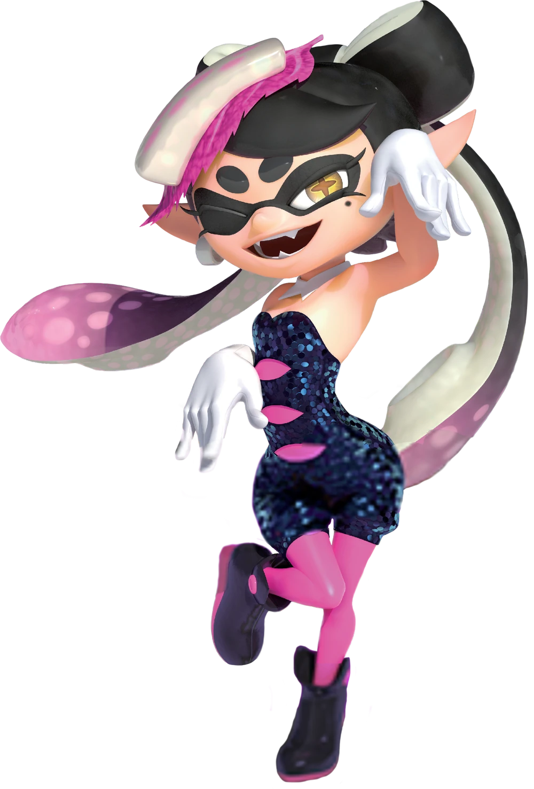
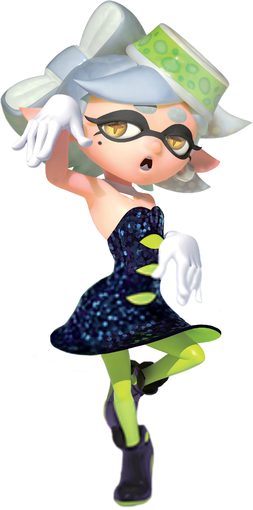

Callie
Callie is one half of the Inkopolis pop duo. She is very excitable and positive, often making innocent, straightforward comments with a grin on her face. Her solo song, Bomb Rush Blush, is a fast-paced and exuberant pop song, showing her energy and playfulness as she runs around the stage.

Marie
Marie is the other half of the Squid Sisters. She is less excitable, usually only giving a small smile. Many of her comments are sarcastic, though never outright intended to be mean-spirited. Her solo song, Tide Goes Out, is a slow, serene song, with movement kept mostly to her arms, being less energetic than Bomb Rush Blush's choreography to show Marie's more calm and reserved personality compared to Callie's.